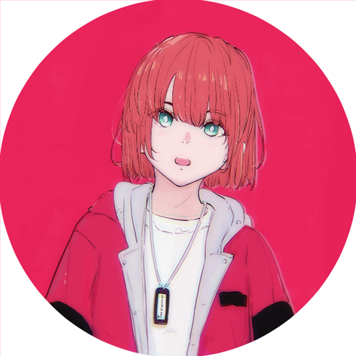

ARCHITRAVE （あーきとれーぶ）
色彩とエモーションで、心に残る一瞬を。
埼玉県出身。音楽MV・アニメーション映像を中心に活動。楽曲に寄り添った、鮮やかで感情に訴える映像表現が得意。編集スキルを活かして、イラストを描かずに映像を監督することも。
2020年より制作を開始し、フリーランスとして200件以上の実績。
TikTok×ソニーミュージック「アトリエプロジェクト」所属。
Vivid color, vivid emotion — moments that stay with you.
Based in Saitama, Japan. Working mainly on music videos and animated visuals, with a focus on vivid, emotionally driven visuals that move in step with the music. Also directs videos without drawing the illustrations themselves, drawing on editing skills.
Started creating in 2020, with 200+ freelance projects to date. Member of the TikTok × Sony Music "Atelier Project."
【取引先実績】
ユニバーサルミュージック合同会社／テレビ朝日ミュージック株式会社／ソニーミュージック／ソニー・クリエイティブプロダクツ／株式会社ココナラ／株式会社トイズファクトリー／ANYCOLOR株式会社
ユニバーサルミュージック合同会社／テレビ朝日ミュージック株式会社／ソニーミュージック／ソニー・クリエイティブプロダクツ／株式会社ココナラ／株式会社トイズファクトリー／ANYCOLOR株式会社
楽曲に寄り添った映像表現を。MV制作のご相談はお気軽にどうぞ。
ご依頼はこちら →